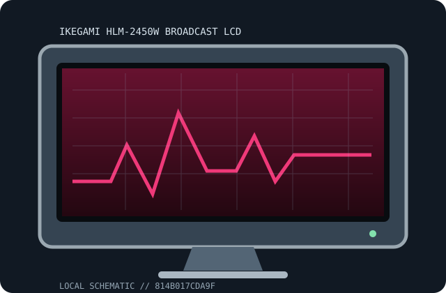

[ INDIVIDUAL COMPONENT // DISPLAYS ]
Ikegami HLM-2450W Broadcast LCD
24-inch HD broadcast LCD monitor Professional displays.

IDENTIFICATION: Match complete model suffix and region to the rear label and manufacturer manual. Revision-sensitive details are qualified rather than inferred from a similar product.
Specifications
| Catalog subcategory | Professional displays |
|---|---|
| Exact product / family | Ikegami HLM-2450W Broadcast LCD |
| Panel / tube | 24-inch LCD, 1920 × 1200 class |
| Native timing / refresh | Native and accepted timings depend on exact revision |
| Inputs | SDI and analog/video inputs; installed options vary |
| Power | Power draw varies by region and installed options; check the matching model manual and rear nameplate. |
| Stand / size | Panel diagonal appears above; stand, hood, rack and input-board configuration must be verified for this exact unit. |
Revision, signal & host compatibility
Regional suffix, firmware and installed boards may change inputs and supported formats. Record the exact label and board inventory.
Distinguish accepted broadcast signal formats from panel-native timing. Verify SDI link mapping/level, scan format, and installed input-board configuration against the manual.
Preservation & repair notes
Document firmware, option boards, calibration, panel hours and signal path. Inspect connectors/fans; internal service belongs to qualified broadcast technicians.
Log serial/date label, accessories, signal chain, image condition, calibration, firmware and repair history. Use the correct manufacturer service procedure and qualified technicians for internal work.
Manufacturer manuals & sources
- Ikegami — official support and documentation portalLocate the exact model manual/specifications here; the rear label and matching revision document govern power, modes and service.
- Model-specific manual catalog search: Ikegami HLM-2450W Broadcast LCDDocumentation discovery link. Verify any located guide against the exact model/revision before applying timings or repair instructions.